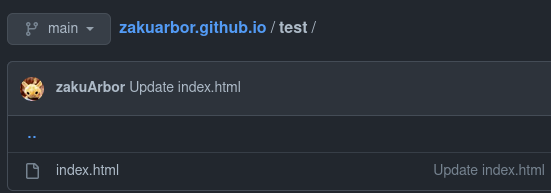
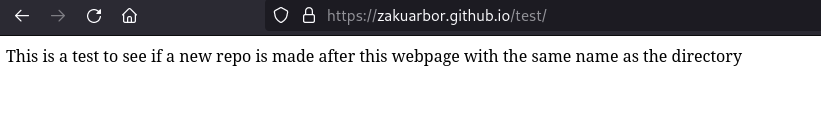
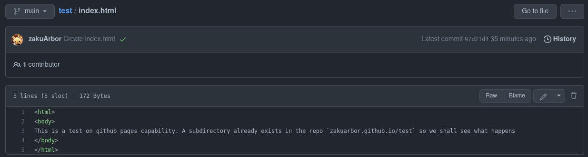
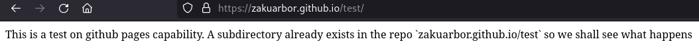

A question arosed in my head when I was answering some questions about Github Pages to a student. What happens when you have a github page that corresponds to your Github name that contains a directory with the same name as another repository on your account. To elaborate, all Github pages on your account is a directory under a domain name reserved for each account which follows the following pattern:
<username>.github.io
So the domain name reserved for my github account is https://zakuarbor.github.io.
Every repository including this blog is treated as a spearate directory under that domain name.
For instance, I have a repository named blog and portfolio whose url are:
https://zakuarbor.github.io/blog/ and
https://zakuarbor.github.io/portfolio/.
However Github allows you to have a special repository made for GithubPages, a repository whose name is
the repository itself: <username>.github.io. For instance, my special github page would be the
domain name of this blog: https://zakuarbor.github.io.
CONFLICT RESOLUTION
The question that can be asked is what happens if you have a directory in the special repository with the same name as an existing repository. Which link will Github Pages direct you to? To answer this question, I have proceeded to make a special github page repository and a new repository to test this theory out.
1. Create a directory /test and test if the webpage is rendered: https://zakuarbor.github.io/test

Creating an index.html file on the special repository under the directory test

The webpage that gets rendered after creating a special github repository and an html file under a directory called test
As expected, the test page gets rendered.
2. Create a repository named test and see what webpage gets rendered: https://zakuarbor.github.io/test

The content of index.html on the new repository named test

The webpage that gets rendered is the index.html belonging to the new repository and not the webpage under the special repository
The resulting page after creating a new repository test which has the same name as the directory under the special repository is that Github Pages routes the webpage
to the new repository webpage. This means that Github will ignore directories under the special repository if they conflict with a repository that has their own Github
Pages (though I haven’t checked what happens if the repository doesn’t have a github page but I assume no conflict will occur so it’ll render the webpage that is
currently being hosted).
3. Make a new update in the special repository on the file test/index.html and see what happens.
The result was the same, the special repository directory test was ignored completely in favor with the repository test.
This decision makes perfect sense.
Conclusion
When a special github page repository <user>.github.io has a directory that conflicts with another repository (i.e. have the same name), then Github Page
will route the url to the repository instead of the webpage under the directory.